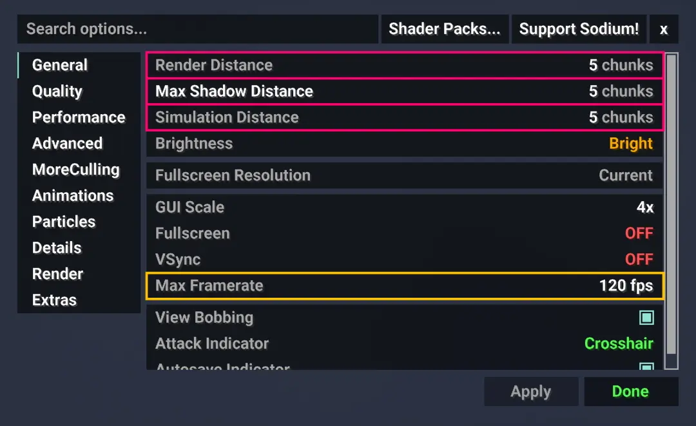
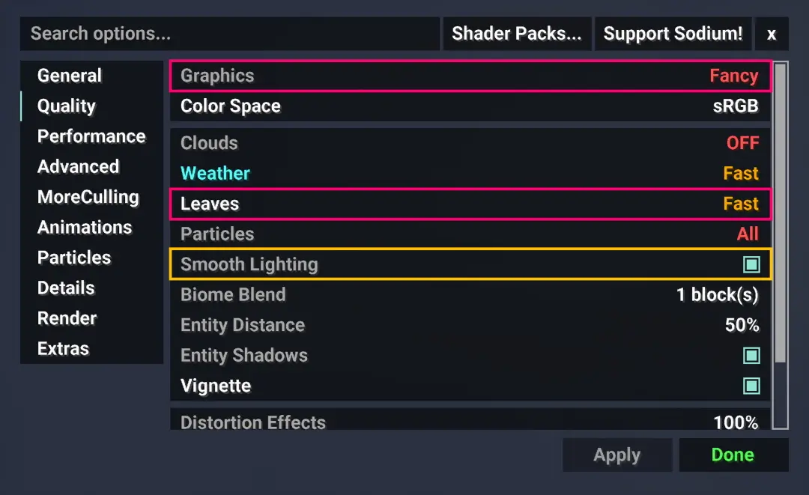
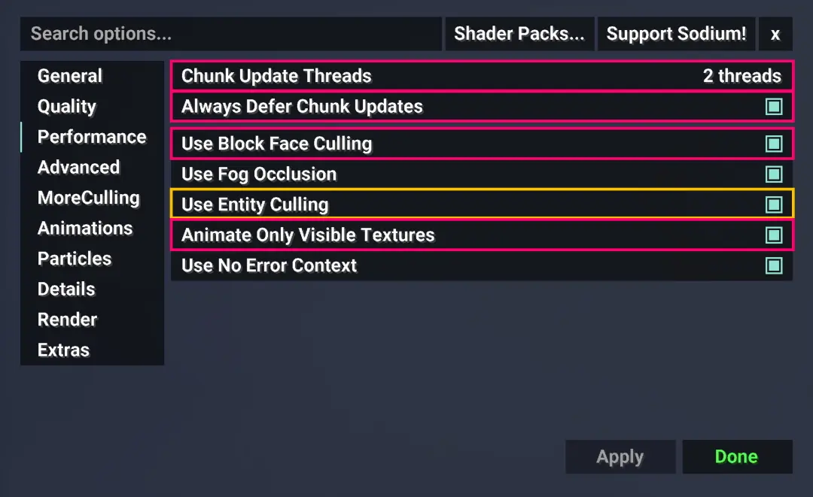
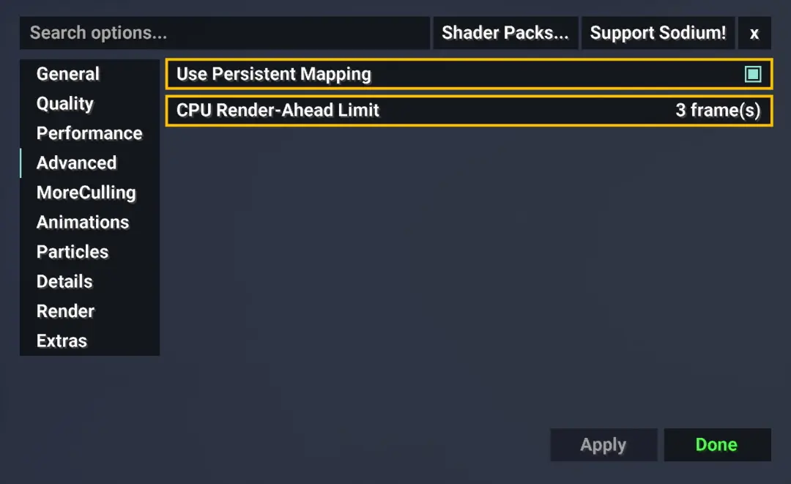
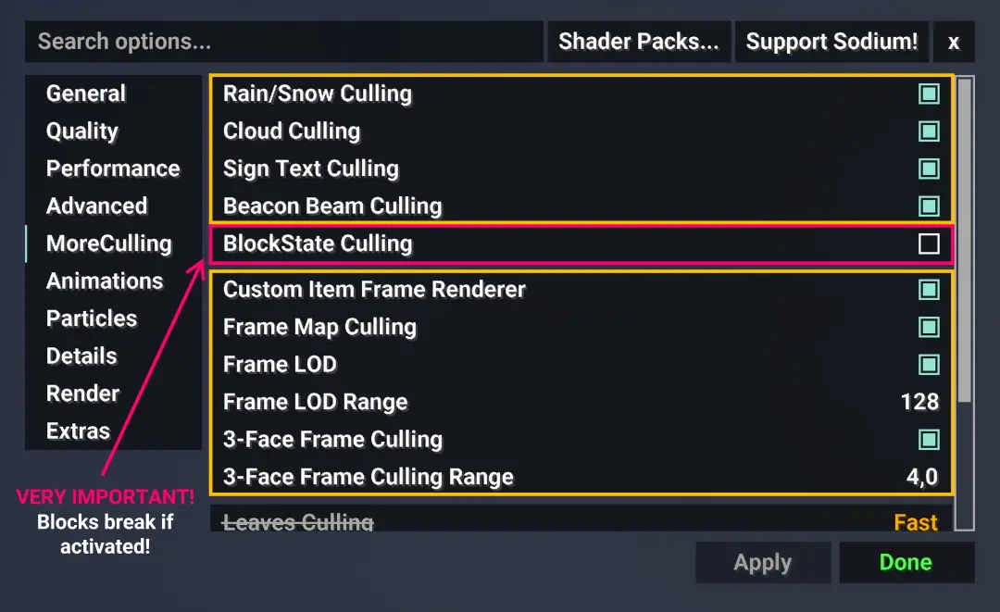

Installation
Loading...
Settings
Fabulously Optimized and Iris Settings
Having the right settings plays a big role in performance and avoiding visual bugs. Minecraft is a pretty old game, and Brickcraft comes along with features Mojang never accounted for. I hope you are okay with tweaking some stuff here and there 😉!
Very Important Settings
Recommended Settings

General

Quality

Performance

Advanced

Culling
Shader Settings
The correct settings for the right shaders are the absolute most important! Never forget to activate Normal Mapping when using Brickcraft Premium or Extreme Edition!
Loading...
Loading...